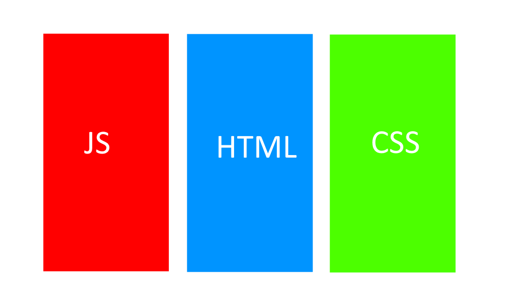
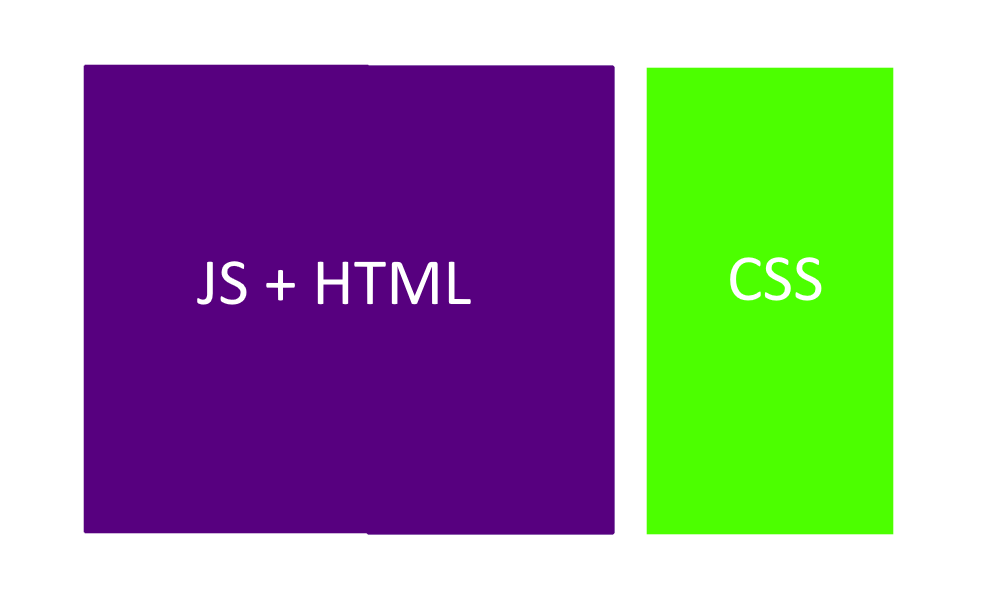
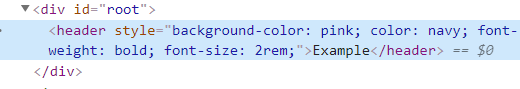
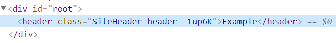
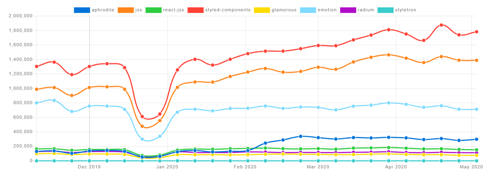
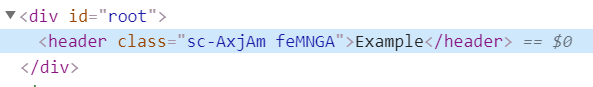
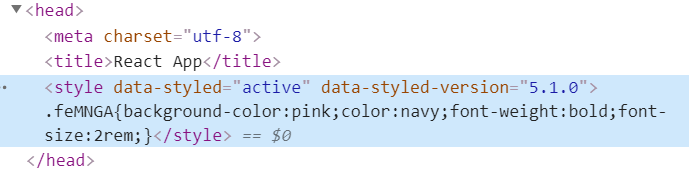
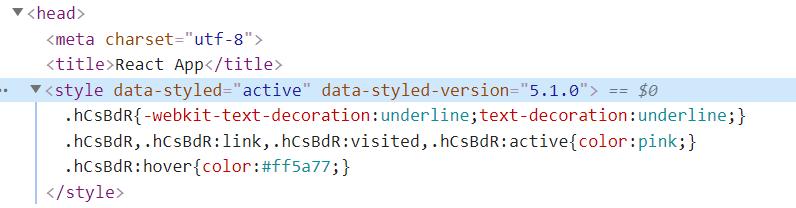

Styling React Apps
SASSGo to SASS section
Traditionally I've used pre-processors such as SASS/SCSS to style websites I've built. They offer great features like variables and mixins. This allows a developer to control the global look and feel of a site from a single location, without diving into detailed CSS rules. For example this is some SCSS I used to style this site:
// In a shared global file
$primary-color: #f8bb15;
$secondary-color: #000000;
$ternary-color: #ffffff;
$quaternary-color: #464a4c;
$quinary-color: #f7f7f9;
$muted-color: #636c72;
$error-color: #d9534f;
@mixin media-extra-small-only {
@media (max-width: 575px) {
@content;
}
}
// In a file for the front page
#primary-area {
background-color: $primary-color;
#logo h1 {
@include media-extra-small-only {
font-size: 5rem;
letter-spacing: 0.5rem;
}
font-size: 6rem;
color: $ternary-color;
font-family: $fancy-font-family;
text-transform: uppercase;
}
}
The mixins and variables allow me to theme how the front-page and other pages look without having to refactor the CSS for those pages. E.g. I could change most of this website from being yellow to blue or change the screen width I use to declare a screen is no longer extra-small (mobile) in a single line. This is really powerful, particularly when you have a white-label product.
React ComponentsGo to React Components section
With React however, we are encouraged to decouple our components as much as possible. In my opinion if a component is given the same props, a component should always act and look the same, if you want your components to be truly independent chunks on a page. If however, the CSS isn't controlled by the component, that might not always be true. Depending on where it's placed in the page, different selectors could kick in and potentially hide content for example. Whether you have the same opinion or not, the nature of a global stylesheet definitely conflicts with the idea of componentisation.
I remember being horrified when I first saw react code. Transitionally I had always separated my HTML, JS and CSS:

Yet React blew that out of the water, it splattered the HTML and JS together:

Merging them together gives us various benefits. For example it offers a better developer experience since we no longer have to constantly flick between two files and we get better encapsulation as everything is in one place and is in control of the component. The next logical step is to encapsulate our styling within our components too so we get those benefits again.
Inline stylingGo to Inline styling section
Inline styling is the most obvious and simplest way to achieve this, below is a really simple example.
Firstly we can create a config file that controls the global aspect of our site:
// Theme.js
export default {
primaryColor: "pink",
secondaryColor: "navy",
defaultFontFamily:
"'Open Sans', -apple-system, system-ui, BlinkMacSystemFont, 'Segoe UI', Roboto, 'Helvetica Neue', Arial, sans-serif;",
};
Unlike global style sheets that go in to the nitty gritty detail of specifying exact element selectors, here we only specify things like colours and fonts and sizes. It is then up to the components to use these values as they see fit. This is a much less brittle way of storing your global styles.
Once we have the config file we consume it like so:
// SiteHeader.jsx
import React from "react";
import theme from "./Theme";
export function SiteHeader(props) {
const style = {
backgroundColor: theme.primaryColor,
color: theme.secondaryColor,
fontFamily: theme.fontFamily,
fontWeight: props.IsBold ? "bold" : "normal",
fontSize: "2rem",
};
return <header style={style}>{props.title}</header>;
}
As you can see, you can get really readable styling using inline styles. You get the benefits of having a centralised config for your site, similar to the SCSS variables I mentioned previously, and the components are really nicely encapsulated along with their styles.
It is also easier to maintain than CSS files as we get very little help from the IDE with CSS. For example if you refactor a load of components so that they no longer use several classes, you now have to go hunting through the CSS to remove the classes there too. Often these can get missed and they end up unnecessarily bloating your CSS. Using inline styles, that problem goes away. If you remove a component you know its styles are removed too.
Another benefit of inline styles is that we don't get class name clashes. This occurs when two components both use the same class name for their styling, but want different things from that class name.
Unfortunately, inline styling does have some serious downsides too, which largely make it a bad choice to use most of the time.
For example, the rendered HTML is extremely bloated with inline styles making it hard to debug.

In a simple example like above, it isn't a problem but once you have all of your components styles in the DOM it's not hard to imagine how much of a mess that would become.
These inline styles can also have really bad performance. If you have a list of 50 components that all use the same styles, the browser has to calculate the styling for each component individually, so it does the same thing 50 times. Inline styles are handled differently to normal CSS and I believe inline styles are calculated by the browser's JavaScript engine and not its CSS engine, which adds to the performance hit.
Inline styles do not support multiple commonly used CSS features like pseudo classes, animations and media queries. You have to combine them with traditional stylesheets to achieve this but then you're losing the benefits of the encapsulation and you're arguably making things worse by splitting the styling across multiple places.
| Pros | Cons |
|---|---|
| Simple | Debugging |
| Allows global themeing whilst retaining encapsulation | Performance |
| Easier to maintain than CSS files | Lack of features |
CSS ModulesGo to CSS Modules section
CSS modules allow us to scope CSS classes to a specific component. Below is a very simple example of how to use CSS modules combined with CSS variables:
// SiteHeader.jsx
import React from "react";
import classes from "./SiteHeader.module.css";
export function SiteHeader(props) {
return <header className={classes.header}>{props.title}</header>;
}
/* Site.css */
:root {
--primaryColor: pink;
--secondaryColor: navy;
}
/* SiteHeader.module.css */
.header {
background-color: var(--primaryColor);
color: var(--secondaryColor);
font-weight: bold;
font-size: 2rem;
}
The above example requires Webpack to be set up correctly, this is done for you by tools like create-react-app. At build time Webpack places a random suffix on the class name like this:

When running in production mode, Webpack joins together all the modules into one minified file.
The unique class name is created by joining together the CSS module name ("SiteHeader"), the class name ("header") and then a random suffix to ensure uniqueness. This scopes the styles to a component so we can't have class name clashes.
The performance is much better than inline styles, the CSS engine loads in the styling on page load and it only needs to load the class once, regardless of how many times the component is rendered on the page. You also have access to all of CSS's features such as pseudo classes, animations and media queries. CSS variables work in all modern browsers and a shim is available for IE.
It still relies on the CSS being put in a separate file however, so we still have to flicker between multiple files when developing against a component. This means so we lose a tiny bit of the tight encapsulation of inline styles although due to the scoping of the classes we do get much better encapsulation compared to traditional global stylesheets.
One of the tiny niggling issues of having a separate CSS file, is that if you're developing a package for 3rd party use, the 3rd party has to reference both your JS files and your CSS file. WIth inline styles it's as simple as installing an NPM package and importing the component.
Another thing we lose compared to global SCSS style sheets is the lack of a mixins. Mixins are small helper methods that you can execute. For example, SCSS exposes a method that allows you to darken a colour by a certain factor.
| Pros | Cons |
|---|---|
| Solves class name clashes | CSS is still in a separate file |
| Much better encapsulation than global stylesheet | No SCSS mixins |
| Much better performance | |
| Full CSS feature-set |
CSS-in-JSGo to CSS-in-JS section
Depending on your requirements, CSS modules combined with CSS variables will probably do you pretty well in most cases. It is however a shame in my personal opinion, that the inline styles have such a better development experience compared to CSS modules. When I cam across CSS-in-JS it looked like a great halfway house between the two. There are many CSS-in-JS libraries but styled-components appears to be the most popular at the moment:

See here for the latest graph.
CSS-in-JS libraries take in an object that represents a set of styles in a very similar way to inline styles. The difference with CSS-in-JS being instead of putting those rules in an inline style attribute, they inject a <style> block into the DOM.
The styled-components library uses a new ES language feature that I hadn't seen before called "tagged template literals". Just in-case it's catches you off guard too I'll go over it quickly now. To use it, you first have to declare a function that takes in a collection of strings and any number of additional params like this:
function myExample(strings, ...keys) {
console.log("Strings:");
strings.foreach(console.log);
console.log("Keys:");
keys.foreach(console.log);
}
Then if you call the method using a new funky syntax:
const value1 = "world";
const value2 = 42;
myExample`hello${value1}goodbye${value2}`;
The example function would log:
Strings:
hello
goodbye
Keys:
helloworldgoodbye42
world
42
- The strings parameter contains all of the parts of the interpolated template, plus the result of the interpolation.
- The keys parameter contains all of the passed in values.
Now we know a little about this new syntax we can look at how we could use the styled-components library in a very simple example:
import React from "react";
import styled from "styled-components";
const Header = styled.header`
background-color: pink;
color: navy;
font-weight: bold;
font-size: 2rem;
`;
export function SiteHeader(props) {
return <Header>{props.title}</Header>;
}
The styled.header method returns a styled <header> tag, the library has methods for all HTML tags such as styled.h1 etc. It looks like this when it's rendered in the browser:

And if we look in the head of our HTML page you can see the styled-components library has inserted the following style block:

The random class name prevents clashes with other components in the same way CSS modules do. Using a style blocks means that a lot of the performance issues and lack of features with inline styling go away.
The styled-components library also has an API allowing you to define a global theme object, so you can change the look and feel of the site from a central place too, like we did earlier in the inline example:
// Theme.js
export default {
primaryColor: "pink",
secondaryColor: "navy",
defaultFontFamily:
"'Open Sans', -apple-system, system-ui, BlinkMacSystemFont, 'Segoe UI', Roboto, 'Helvetica Neue', Arial, sans-serif;",
};
// App.js
import React from "react";
import { ThemeProvider } from "styled-components";
import theme from "./Theme";
import { SiteHeader } from "./SiteHeader";
export function App() {
return (
<ThemeProvider theme={theme}>
<SiteHeader title="Example" />
</ThemeProvider>
);
}
// SiteHeader.js
import React from "react";
import styled from "styled-components";
const Header = styled.header`
background-color: ${props => props.theme.primaryColor};
color: ${({ theme }) => theme.secondaryColor};
font-weight: bold;
font-size: 2rem;
`;
export function SiteHeader(props) {
return <Header>{props.title}</Header>;
}
So there are two main things to explain here. The first is that the styled-components library contains a ThemeProvider component. This uses the react context API to expose the global theme object to styled components. This is usually done in a root element like <App/>. You can also nest themes which is pretty neat. The second thing to explain is the anonymous functions in the styled header. If the styled-components library receives a function for one of the interpolated parameters, it passed in the props for that styled component along with the theme object as a property. For the "color" rule I deconstructed the "theme" property from the props parameter. This looks weird on first glance but once you get used to it, it helps simplify the code when you're accessing the theme a lot.
Another nice feature is that when the styled-components library inserts the CSS into the DOM, it also auto-prefixes it, and because this is done client side, it only inserts the prefixes that are needed for that browser.
There are a lot more features of the styled-components library, you find the docs here.
| Pros | Cons |
|---|---|
| Allows global themeing whilst retaining encapsulation | Less performant than CSS, more load on client via JavaScript |
| Easier to maintain than CSS files | There can be more of a flicker on page load when the CSS is inserted into the DOM |
| Much better performance than inline styles | No intellisense in IDE, like autocomplete or colour pickers |
| Full CSS feature-set |
PolishedGo to Polished section
The final piece of the jigsaw we're missing, is a replacement for the SCSS/SASS mixins. This can be achieved while using CSS-in-JS by using a library like polished. You can find the docs for polished here. Below is an example of how we can use polished to darken a link by 20% when it's hovered over:
// HomeLink.jsx
import React from "react";
import styled from "styled-components";
import { darken } from "polished";
const StyledLink = styled.a`
text-decoration: underline;
&,
&:link,
&:visited,
&:active {
color: ${({ theme }) => theme.primaryColor};
}
&:hover {
color: ${({ theme }) => darken(0.2, theme.primaryColor)};
}
`;
export function HomeLink() {
return <StyledLink href="/">Home</StyledLink>;
}
This results in the following style tag being created in the document's head:

You can also see the styled-components library's auto-prefixing in action here. Notice how it has only applied webkit- prefixes because I was using Chrome.
Other features of the polished library that are easily achieved in SCSS include mathematical operations. E.g. if you add together "2rem" and "1rem" in JavaScript, they'll concatenate because they're both strings. The polished library has a method called math that you can call like this:
const result = math("1rem + 2rem");
// result contains "3rem"
Read about the math function here.
Some More ExamplesGo to Some More Examples section
Here are a couple of more advanced examples:
// Theme.js
export default {
mediaQueries: {
extraSmall: {
// Extra small devices (portrait phones)
only: "(max-width: 575px)",
},
small: {
// Small devices (landscape phones)
down: "(max-width: 767px)",
up: "(min-width: 576px)",
only: "(min-width: 576px) and (max-width: 767px)",
},
medium: {
// Medium devices (tablets)
down: "(max-width: 991px)",
up: "(min-width: 768px)",
only: "(min-width: 768px) and (max-width: 991px)",
},
large: {
// Large devices (desktops)
down: "(max-width: 1199px)",
up: "(min-width: 992px)",
only: "(min-width: 992px) and (max-width: 1199px)",
},
extraLarge: {
only: "(max-width: 1200px)", // Extra large devices (large desktops)
},
},
gridWidths: {
small: "540px",
medium: "720px",
large: "960px",
extraLarge: "1140px",
},
gridGutterSize: "1rem",
};
// ResponsiveContainer.jsx
import styled from "styled-components";
export const ResponsiveContainer = styled.div`
margin-left: auto;
margin-right: auto;
display: block;
box-sizing: border-box;
max-width: 100%;
padding-top: 0;
padding-right: ${({ gutter, theme }) =>
gutter ? theme.gridGutterSize : "0"};
padding-bottom: 0;
padding-left: ${({ gutter, theme }) => (gutter ? theme.gridGutterSize : "0")};
@media ${({ theme }) => theme.mediaQueries.small.up} {
width: ${({ theme }) => theme.gridWidths.small};
}
@media ${({ theme }) => theme.mediaQueries.medium.up} {
width: ${({ theme }) => theme.gridWidths.medium};
}
@media ${({ theme }) => theme.mediaQueries.large.up} {
width: ${({ theme }) => theme.gridWidths.large};
}
@media ${({ theme }) => theme.mediaQueries.extraLarge.only} {
width: ${({ theme }) => theme.gridWidths.extraLarge};
}
`;
The above example gives us a responsive grid, much like the one that is used in bootstrap to centre your content at a fixed width in the centre of the page. Below is example usage:
<ResponsiveContainer>
Some content
</ResponsiveContainer>
<ResponsiveContainer gutter>
Some content
</ResponsiveContainer>
As you can see, here we allow the developer to specify whether there are gutter spaces in the container in the form of props. This means we now allow developers to change how this component looks in two ways, globally via the theme object or per component using props. This allows us to control exactly how the component can be tweaked. For example, it makes no sense to change the box-sizing property of the container, in fact doing so would result in a bug having this hard-coded in the component makes that more obvious compared to having it in an external file. It also means that given the same props, the component always renders the same in the browser which is nice.
Also note how the example above includes variables like "(min-width: 992px) and (max-width: 1199px)", it wouldn't be possible to have that as a variable in CSS modules. The following CSS wouldn't be valid
@media --mediaQueriesLargeOnly {
/* this line wouldn't be valid */
width: --gridWidthsLarge;
}
Due to the fact that the CSS string is interpolated before it is ran by the browser, we get this little added benefit.
Another nice feature of the styled-components library its "extend" functionality. Below is an example:
import styled from "styled-components";
import { darken } from "polished";
const BaseButton = styled.button`
transition: background-color 0.5s ease;
/* Other shared styles for button here */
`;
export const SuccessButton = styled(BaseButton)`
color: ${({ theme }) => theme.positiveColor}
background-color: ${({ theme }) => theme.positiveColorBackground}
&:hover {
background-color: ${({ theme }) =>
darken(
theme.defaultBrightnessAdjustment,
theme.positiveColorBackground
)};
}
`;
export const FailureButton = styled(BaseButton)`
color: ${({ theme }) => theme.failureColor}
background-color: ${({ theme }) => theme.failureColorBackground}
&:hover {
background-color: ${({ theme }) =>
darken(
theme.defaultBrightnessAdjustment,
theme.failureColorBackground
)};
}
`;
export const WarningButton = styled(BaseButton)`
color: ${({ theme }) => theme.warningColor}
background-color: ${({ theme }) => theme.warningColorBackground}
&:hover {
background-color: ${({ theme }) =>
darken(
theme.defaultBrightnessAdjustment,
theme.warningColorBackground
)};
}
`;
The code above allows us to have the equivalent of a base-css class, but since we don't export it, it is only available to us which something that is very difficult (impossible?) to do with CSS alone.
You may be wondering how you apply styles to elements like body, since they sit outside of the global React component. That is done using the createGlobalStyles method like below:
// GlobalStyling.jsx
import { createGlobalStyle } from "styled-components";
import { darken, normalize } from "polished";
export const GlobalStyling = createGlobalStyle`
${normalize()}
body {
background-color: ${({ theme }) => theme.backgroundColor};
color: ${({ theme }) => theme.background.defaultColor};
font-family: ${({ theme }) => theme.defaultFont};
}
a,
a:link,
a:visited,
a:active {
color: ${({ theme }) => theme.primaryColor};
text-decoration: underline;
}
a:hover {
color: ${({ theme }) =>
darken(theme.defaultBrightnessAdjustment, theme.primaryColor)};
text-decoration: underline;
}
`;
// App.jsx
import React from "react";
import { ThemeProvider } from "styled-components";
import theme from "./Theme";
import { GlobalStyling } from "./GlobalStyling";
export function App() {
return (
<ThemeProvider theme={theme}>
<GlobalStyling />
// Rest of app here
</ThemeProvider>
);
}
The above example exports a global styles component that should be declared in your root component and have no children of its own. The CSS inside this module is applied to the whole page. This does allow you to specify some defaults for your page although it is often best to keep this as small as possible and keep your styling in your theme and component in my opinion. This can be useful though if you are serving html stored in a database for example. You can read more about the createGlobalStyles method from the styled-components library here.
Another thing you may have noticed is the normalize method from the polished library. CSS normalize or reset libraries need to be applied to the entire page so they need to be applied globally. Whether you want to use one depends on your requirements. You can read more about the normalize method from the polished library here.
SummaryGo to Summary section
Combining styled-components and polish seem like a great fit to me. They're not perfect, they do add load to the JavaScript engine when the component is rendered for the first time, but overall I think they're a very good middle ground. Let me know what you think in the comments!